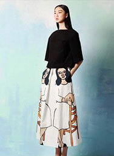

首页: 设计团队 > 刘清杨
设计团队
- 刘清扬
- 韩露露
- 周翔宇
- 罗铮
生平简介ACCOUNT OF THE AUTHOR'S LIFE
设计师刘清扬( CHRISTINE LAU) , 生在北京,长在香港, 18岁留学英国,就读于CENTRAL SAINT MARTINSCOLLAGE英国圣马丁艺术设计学院)TEXTILEDESIGN (面料设计)专业。出于对服装设计的热爱,毕业后,在做面料设计师的同时开始自学服装设计。在中西文化结合的生长环境影响下,形成了对设计的独特见解。面料设计的基础更令其在服装设计.上有着得天独厚的优势。
设计风格DESIGN STYLE
设计风格优雅而前卫,注重服装设计的原创精神。设计师将复古元素和现代简约设计巧妙的结合在-起,创造出-种精致并且经典的设计风格。设计师认为面料是影响服装设计的关键所在,因此对面料的运用有着独特的见解而每一季由设计师亲自操刀设计的另类印花面料

设计作品DESIGN WORKS

12